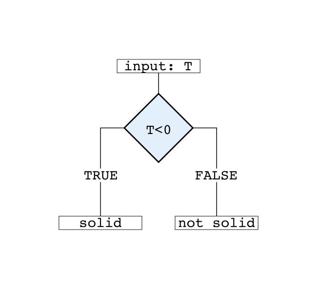
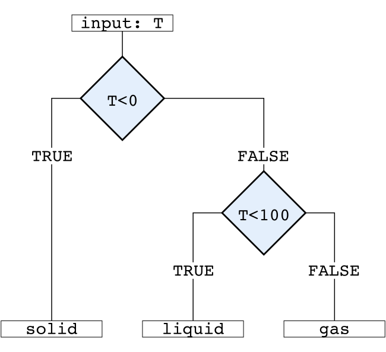

Chapter 9 Control Structures (2)
TODO this is a copy of the one above, at leas in large parts. Merge.
Graphical representation:

Simple representation of an if-else control structure.

Simple representation of an if, else if, else control structure.
9.1 Control Structures
Last time we have been looking at if conditions which allow you to conditionally execute code. This time we will have a quick look at for, while, and repeat loops and the break, next, and return keywords/functions.
ifand : test a condition and act on itfor: loop over a fixed number of itemswhile: execute loopwhilea condition isTRUErepeat: an infinite loop (untilbreakstops it)break: stop/break execution of a loopnext: skip iteration, continue loopreturn: exit a function (returns result)
9.2 for loops
for loops are used frequently when writing scripts to execute a set of instructions multiple times e.g.:
- read a set of input files
- do calculations for a set of values
- search for specific data
- …
9.3 Basic usage
- Structure:
for (<value> in <values>) { <action> } <value> is the current ``loop object'',` a set of (different) values over which one would like to iterate - the
<action>is executed for each<value>in<values> <values>can be vectors or lists, typically vectors are used (integer vectors, numeric vectors, or character vectors)- Note: R has no for-loop constructor like
for (i = 1; i <= n; i++) { ... }as many other programming languages do. The R equivalent would isfor (i in 1:n) { ... }
9.4 For loops over vectors
The following for loop iterates over an integer vector c(1L, 2L, 3L) starting with i = 1L and iterates over i = 2L and i = 3L. The for loop ends after iterating over all elements in the vector.
# For loop over an integer
# vector with 3 elements
for (i in c(1L, 2L, 3L)) {
print(i)
}## [1] 1
## [1] 2
## [1] 3In R we can also use a character vector to loop over. E.g., looping over a set of names (character vector c("Reto", "Ben", "Lea"), the loop object here is called name:
# For loop over a character
# vector with 3 elements
for (name in c("Reto", "Ben", "Lea")) {
print(name)
}## [1] "Reto"
## [1] "Ben"
## [1] "Lea"Instead of writing for (i in c(1L, 2L, 3L)) ... we can also loop over an existing object. In the example below we create an integer vector x <- 1:5 which we use in the for loop.
# Define the vector over
# which we will loop
x <- 1:5# For loop
for (i in x) {
print(i)
}## [1] 1
## [1] 2
## [1] 3
## [1] 4
## [1] 5The very same yields for character vectors.
# Define the vector over
# which we will loop
participants <- c("Reto", "Ben", "Lea")# For loop
for (name in participants) {
print(name)
}## [1] "Reto"
## [1] "Ben"
## [1] "Lea"We can also define a for loop over a “reverse” sequence (a decreasing sequence), e.g., a sequence 3, 2, 1 by either defining a decreasing sequence 3:1:
# Looping "backwards"
# (decreasing integers)
for (i in 3:1) { print(i) }## [1] 3
## [1] 2
## [1] 1or by using the rev(...) (reverse) function. The reverse function simply reverses all elements. Thus, rev(c(1L, 2L, 3L)) is identical to c(3L, 2L, 1L):
# Or using "rev" (reverse)
x <- 1:3
for (i in rev(x)) { print(i) }## [1] 3
## [1] 2
## [1] 1The very same yields for character vectors.
participants <- c("Reto",
"Ben",
"Lea")
for (name in rev(participants)) {
print(name)
}## [1] "Lea"
## [1] "Ben"
## [1] "Reto"Loops can also be nested. Most often this is used in a matrix context (looping over data in a matrix). We will talk about matrices next week!
Frequently used: a nested for loop over two loop indices called i and j (in matrices corresponding to rows and columns).
# Nested for loops
for (i in 1:3) {
for (j in 1:2) {
print(c(i, j))
}
}The outer for loop iterates over i = c(1L, 2L, 3L), the inner one over j = c(1L, 2L). The result is the following:
# Nested for loops
for (i in 1:3) {
for (j in 1:2) {
print(c(i, j))
}
}## [1] 1 1
## [1] 1 2
## [1] 2 1
## [1] 2 2
## [1] 3 1
## [1] 3 2At first, the outer loop sets i = 1L and executes its instructions (the inner for loop). The inner for loop sets j = 1L (thus, the first print prints 1 1; i = 1L, j = 1L). As the inner for loop is not yet finished, j will be set to j = 2L and we get the output 1 2 (i = 1L, j = 2L). After that the inner loop finished, thus we proceed with the outer loop and set i = 2L and, again, execute the instructions (which is the inner for loop). The inner loop now iterates over j = 1L and j = 2L again which gives us the output 2 1 and 2 2. Then, i is set to i = 3, the inner loop is executed once more (gives 3 1 and 3 2). Now the outer loop is finished and the script ends.
9.5 Combine loops and if/else conditions
To create more dynamic loops we can also combine loops (not limited to for loops) with additional control structures such as if statements.
The example below loops over i in 1:n (as n <- 3L it loops over i = 1L, i = 2L, and i = 3L) and, conditional in i, a string is printed.
# Upper limit for the loop
n <- 3L
for (i in 1:n) {
if (i < n) { print("ice") } else { print("baby") }
}## [1] "ice"
## [1] "ice"
## [1] "baby"There are special control statements for loops, namely return (only used for loops in functions), next, and break.
9.6 Use next and break
next and break are no functions but control statements (simply next or break, not next() or break()).
nextis used to skip one iteration. Whenever called inside a loop, the current iteration of this loop is skipped and the loop continues with the next iteration (but does not stop).- the
breakstatement stops the execution of the loop. Can be used to stop the execution of a loop early.
9.6.1 How to use next
The following lines show how next can be used in a loop. We have a for loop which iterates over all <var> in <vars> and has an additional if condition. Whenever this condition is TRUE, next is called which skips the current iteration and proceeds with the next one (next <var> in the sequence <vars>).
for (<var> in <vars>) {
if (<condition) {
next
}
}9.6.2 How to use break
Very similar to the example above we are looping over a set of <var> along <vars>. As soon as the additional if <condition> is TRUE, break will be called. break will immediately stop the iteration no matter at which position of <vars> we are.
for (<var> in <vars>) {
if (<condition>) {
break
}
}9.7 Practical exercises
- A: Write a
forloop which iterates over an integer sequencefrom = 1upto = 30and print the loop variable. - B: Use the same loop as in A, but
breakif loop variable is larger than or equal to 10. - C: Use the same loop as in A, print the loop variable and whether it is odd or even.
- D: Use the same loop as in A, skip all odd numbers using
next.
9.8 Looping over vector indices
Quite often you will loop over a set of indices (e.g., for (i in 1:100)) and use these indices to access data in vectors, lists, matrices, and other objects. If you forgot how vector subsetting by indices work please go trough the “Vector Subsetting” section of Session 02 (Help & Vectors).
As an example: Let’s imagine we have two character vectors of the same length called first_name and last_name containing the names of some individuals. The first element in a vector in R is always index 1 (not 0 as in other programming languages), the last element in this example is 6 as the vectors have a length of 6 (length(first_name) is 6). Thus, we can do something like this:
# Two character vectors with a set of names
first_name <- c("Lea", "Sabine", "Mario", "Lea", "Peter", "Max")
last_name <- c("Schmidt", "Gross", "Super", "Kah", "Steiner", "Muster")# Loop over indizes
for (i in 1:6) {
print(first_name[i])
}## [1] "Lea"
## [1] "Sabine"
## [1] "Mario"
## [1] "Lea"
## [1] "Peter"
## [1] "Max"The for loop iterates over an integer vector (1:6) containing the values 1L, 2L, …, 6L wherefore i = 1L for the first iteration, i = 2L for the second iteration, and so far and so on. Using vector subsetting by index we can now print the ith element of our vector first_name by simply calling print(first_name[i]).
A slightly more useful example (yes, we could solve it without loops) is the following: We will loop over i in 1:6 and check if the ith element of the vector first_name is "Lea". If the condition is TRUE we have found a person called "Lea" and we will print her full name.
# Two character vectors with a set of names
first_name <- c("Lea", "Sabine", "Mario", "Lea", "Peter", "Max")
last_name <- c("Schmidt", "Gross", "Super", "Kah", "Steiner", "Muster")# Loop over indizes
for (i in 1:6) {
if (first_name[i] == "Lea") {
print(paste("Found a", first_name[i], last_name[i]))
}
}## [1] "Found a Lea Schmidt"
## [1] "Found a Lea Kah"The only thing which is not so nice is that we have hardcoded 1:6 here. As soon as you would get a new vector of names the script would not work anymore (as you may iterate over the wrong number of elements). Thus, we should try to avoid such hard-coded commands/instructions in our code whenever possible.
There are two options to do so. Most obvious is to replace 6 by length(first_name). If you change the length of first_name we will still loop over all elements. Another way in R to do the same is to call the seq_along function. seq_along(x) returns an integer sequence from = 1 to to = length(x) (in our case x is our object first_name) and can thus be used for looping over an object.
1:length(first_name) # Use "length(first_name)"## [1] 1 2 3 4 5 6seq_along(first_name) # Use seq_along## [1] 1 2 3 4 5 6Et voila:
# Use "length(first_name)" instead of hard-coding 6
for (i in seq_along(first_name)) {
if (first_name[i] == "Lea") {
print(paste("Found a", first_name[i], last_name[i]))
}
}## [1] "Found a Lea Schmidt"
## [1] "Found a Lea Kah"9.9 Using next and break
The for loop above prints the name as soon as first_name[i] == "Lea". We could also program it the other way around and do the following:
# Loop over indizes
for (i in seq_along(first_name)) {
# We want to find only "Lea"s
if (first_name[i] != "Lea") next
# Else print
print(paste("Found a", first_name[i], last_name[i]))
}## [1] "Found a Lea Schmidt"
## [1] "Found a Lea Kah"As described earlier, next skips the current iteration. In this example we check first_name[i] != "Lea". If this is TRUE (if this is not a "Lea") we call next which skips this iteration/person. Thus, the print command is only executed when first_name[i] != "Lea" is FALSE, or in other words, whenever first_name[i] == "Lea".
An example for the break statement: We still have the same character vectors first_name and last_name and we will find the first person called "Mario", but only one. To do so we can do the following:
# Loop over indizes
for (i in seq_along(first_name)) {
# We want to find only "Lea"s
if (first_name[i] == "Mario") {
print(paste("Found someone called", last_name[i], first_name[i]))
break
}
print(paste(i, "is no Mario"))
}## [1] "1 is no Mario"
## [1] "2 is no Mario"
## [1] "Found someone called Super Mario"The for loop is again looping over all elements i in seq_along(first_name) and checks if the element first_name[i] of the current iteration is "Mario". As soon as the script finds a "Mario" the condition first_name[i] == "Mario" is TRUE and the name of the person is printed. After the print command break is called which immediately stops the for loop execution. Thus, the for loop stops at i = 3 as the 3th person is a "Mario".
9.10 while loops
Another loop constructor is while. while executes a set of instructions while a condition is TRUE (or, until the condition is FALSE).
Basic usage
- Structure:
while (<condition>) { <action> } - The
<condition>has to be logicalFALSEorTRUE. - The
<action>is executed as long as the<condition>isTRUE.
WARNING: Take care of infinite loops! The following code chunk will run forever.
# Define x
x <- 1
# Increase x by 1 as long as ...
while (x < 0) {
x <- x + 1
}
An example for a while loop: Print all numbers x in \(1, 2, ..., \infty\) as long as x^2 is lower than 20. Start with x <- 0.
- Iteration 1: \(0^2 = 0\) and thus lower than 20 (the condition is
TRUE). At the endxis increased by1(x <- x + 1) and the next iteration is started. - Iteration 2:
xis now1, \(1^2 = 1\) is still< 20and the condition is stillTRUE. Thus, increasexand continue. - Iteration 3:
xis2, \(2^2 = 4\),x^2 < 20isTRUE, increasex, continue. - Iteration 4:
xis3, \(3^2 = 9\),x^2 < 20isTRUE, increasex, continue. - Iteration 4:
xis4, \(4^2 = 16\),x^2 < 20isTRUE, increasex, continue. - Iteration 5:
xis now5. As \(5^2 = 25\) the conditionx^2 < 20is no longerTRUEand thewhileloop stops.
# Start with 0
x <- 0
# Loop until condition is FALSE
while (x^2 < 20) {
print(x) # Print x
x <- x + 1 # Increase x by 1
}## [1] 0
## [1] 1
## [1] 2
## [1] 3
## [1] 49.11 Store Interim Results
Often you would like to keep interim results (the values of the different iterations) rather than only having the one value at the very end of the loop. To do so we have to store the result of each iteration into a suitable object, e.g., a numeric vector.
An example: Let us try the following. We will start with an initial value of 1.0 and multiply it by 1.5 six times. We could write it as follows:
x <- 1.0
for (i in 1:6) {
x <- x * 1.5
}
print(x)## [1] 11.39062And we can see that the result is 11.390625. However, we might be interested in the interim steps (what is 1.0 * 1.5, what is 1.0 * 1.5 * 1.5 and so far and so on).
To do so let’s create an empty numeric vector x of length 7 using vector("numeric", 7). The exercise was to multiply 1.5 six times, however we also have to store our initial value on x wherefore we need 7 elements in our vector (and not 6). This creates a vector containing 7 0s. On the first element (x[1L] we store our initial value 1.0.
N <- 7 # Length of the vector
x <- vector("numeric", N) # Empty vector of length N
x[1L] <- 1.0 # Set the first element to 1.0
print(x)## [1] 1 0 0 0 0 0 0In let’s write the for loop. The first element contains our initial value, thus we will loop over i = 2:7 (i in c(2, 3, 4, 5, 6, 7); which is 6 iterations). In each iteration we take the previous element of x (e.g., when i = 2 we will use x[i - 1] = x[1L]; the first element), multiply this element with 1.5, and directly store it on x[i] = x[2L]. In the next iteration we do the same but using i = 3L and so far and so on.
# Loop over 2:N, store results in x
for (i in 2:N) {
x[i] <- x[i - 1L] * 1.5
}
print(x)## [1] 1.00000 1.50000 2.25000 3.37500 5.06250 7.59375 11.39062But let us do this step-by-step. In a first step we defined ourself a vector x of length 7. We can “visualize” this vector as follows:
By index, the first element of the vector is x[1L], the second one x[2L] and so far and so on (R starts with 1, not 0). Given a second object i = 1L (a vector index) we can also rewrite this as follows:
x[i] is the first element as i = 1L. The second element is x[i + 1L] as i + 1L = 2L, and the last one x[i + 6L] as we have 7 elements (i + 6L = 7L).
In our example (multiply 1.0 six times with 1.5) we first define a vector of length 7 and set x[1L] to 1 which gives us the following numeric vector:
So far, not very impressive.
N <- 7 # Length of the vector
x <- vector("numeric", N) # Empty vector of length N
x[1L] <- 1.0 # Set the first element to 1.0
print(x)## [1] 1 0 0 0 0 0 0In the second step we write the for loop, looping over i = 2:7.
for (i in 2:7) { x[i] <- x[i - 1] * 1.5 }In the first iteration of the for loop i is set to 2L. Inside the loop we compute x[i - 1] * 1.5 and directly store it on x[i]. Thus, we store x[1L] * 1.5 on x[2L] (or x[2L] <- x[1L] * 1.5).
In the next iteration i is set to 3L and we store x[3L] <- x[2L] * 1.5 and so far ans so on …
… until we reach x[7L] <- x[6L] * 1.5, the end of our loop.
At the end we have stored all the interim results on x which now looks as follows:
for (i in 2:7) { x[i] <- x[i - 1] * 1.5 }
print(x)## [1] 1.00000 1.50000 2.25000 3.37500 5.06250 7.59375 11.39062Another way to store interim results is to append(...). append(x, y) simply appends y to x (identical to c(x, y)). This is especially required if we don’t know the final length of our object, in this case x. The following while loop does the following:
- Start with
x <- 1. - In each iteration set
x <- x * 1.5. - As long as
x < 100continue.
As we are not looping over a fixed number of iterations (e.g., for (i in 1:5)) we do not know how many iterations will be necessary until x >= 100. Thus, we have to store our results differently.
- Create a second object
resand store the initial value on it (res <- x). - In each iteration append the new
xtores. This adds the newxat the end ofresand increases the length ofresby1.
x <- 1 # Initial value of x: will be modified
res <- x # Store initial value on "res"
while (x < 100) {
# Compute new x
x <- x * 1.5
# Append new x to vector "res"
res <- append(res, x)
}
print(res)## [1] 1.00000 1.50000 2.25000 3.37500 5.06250 7.59375 11.39062
## [8] 17.08594 25.62891 38.44336 57.66504 86.49756 129.74634print(length(res))## [1] 13Our final object res is of length 13. 12 iterations were required until x got >= 100 (12 iterations but length 13 as we also stored our initial value on res).
Note: if possible try to define your vector in advance (much faster). However, this is only possible if you know how many iterations will be required (e.g., in the for loop). If not, append(...) can be used.
9.12 Practical Session
9.12.1 Exercise 1: Arithmetic mean
Calculate the arithmetic mean over a sequence of random numeric values from a Gaussian distribution (rnorm(...)) using a for loop (without sum(...) and mean(...)).
The arithmetic mean is defined as: \(\bar{x} = \frac{1}{N} \sum_{i=1}^N \big(x_i\big)\)
set.seed(100) # Fix random numbers
x <- rnorm(12) # Draw a set of random numbers
print(x)## [1] -0.50219235 0.13153117 -0.07891709 0.88678481 0.11697127
## [6] 0.31863009 -0.58179068 0.71453271 -0.82525943 -0.35986213
## [11] 0.08988614 0.09627446# What is the mean of x?9.12.2 Exercise 2: Conditional for loop
set.seed(7)
x <- sample(-10:20, size = 15, replace = TRUE)
print(x)## [1] -1 8 20 17 -4 -9 4 15 11 -3 13 -8 13 -3 11- Write a
forloop (do not hard-codei in 1:15which loops over the vector and divide all negative values by5. - Loop over the original vector
xusing aforloop. If an element is negative: overwrite it with the previous element in the vector (e.g., replace-7with2). Do the same but replace with next element. - What happens if you use different random numbers?
9.12.3 Exercise 3: Factorial
In mathematics, the factorial of a positive integer \(n\) (denoted by \(n!\)) is the product all positive integers less than or equal to \(n\) (and, by definition, \(0! = 1\)).
- An example: \(3! = 1 \times 2 \times 3 = 6\)
- Write a small function which takes one input argument
nwhich returnsn!using aforloop. Try the same using awhileloop.
Hint: You may use a decreasing sequence, e.g., i in 3:1!